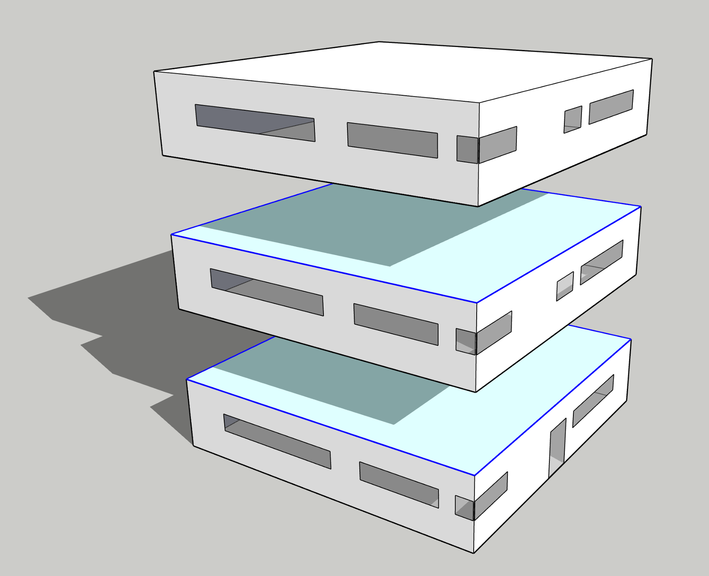

Settings
This section goes over the bare bones minimum of what’s needed to run TBD as an OpenStudio Measure, including minimal OpenStudio model requirements, optional OpenStudio space conditioning inputs, and finally TBD menu options. Experienced OpenStudio users should feel comfortable jumping right in. Newcomers to OpenStudio are encouraged to first check out official online documentation and tutorials for OpenStudio, including the OpenStudio Application - more than useful!
Context
OpenStudio construction details and geometry are required architectural inputs for TBD. Complete OpenStudio models also hold abstract variables like thermal zones and schedules, as well as electrical loads, lighting and HVAC systems. TBD works just fine with complete models, yet can also generate useful design feedback and metrics from intermediate or partial OpenStudio models.
Why? Let’s start by venturing that there’s more than one way to approach building energy modelling. One obvious scenario is to hire competent energy modellers who take care of everything - they’re specialized and very good at what they do. Yet it has its drawbacks as a centralized solution. TBD works just as well within more distributed approaches, where specialists may contribute to the same collective energy model, yet on different parts (and at different design stages); ideally under supervisory versioning control (just like software development). Architectural professionals should be encouraged in maintaining geometry and construction parameters (including thermal bridging) of an OpenStudio model throughout the design process. Same goes for lighting consultants, estimators, LCA assessors, etc.
In other cases, architects may simply wish to explore whether their designs comply with certain prescriptive envelope targets, which can be efficiently ascertained using OpenStudio & TBD (without having to run a single energy simulation). If they’re unsuccessful in achieving for instance UA’ trade-off targets, they can always seek to compensate by handing off the model to building energy modellers. For the latter, inheriting complete (and valid) architectural energy models this way can be a huge time saver. This fits in well within integrated design processes, while encouraging a healthy division of labour and fair distribution of professional liability. Let’s go over what TBD requires from a minimal OpenStudio model.
Minimal model requirements
Fully enclosed geometry: OpenStudio (and to a large extent EnergyPlus) work much better with geometrically enclosed models. This means no gaps between surfaces, no unintentional surface overlaps, no loosely intersecting edges, windows that properly fit within the limits of their parent (or base) wall, and so on. The example warehouse is a good visual of what this all means. It’s worth underlining, as third-party design apps offer mixed results with enclosed geometry when generating BIM-to-BEM models. Despite built-in tolerances, TBD and Topolys can only do their job well if vertices, edges and surfaces are properly connected. Note that partial OpenStudio models are not required to hold ALL building surfaces - just those that comprise the building envelope, in addition to interior floor surfaces. If a building has cantilevered balconies for instance, it’s also a good idea to include those as shading surfaces (which must align with floor surfaces for TBD to autodetect).
Materials & constructions: Geometry is not enough. TBD must also retrieve referenced materials and multilayered constructions for all envelope surfaces. The easiest way is via Default Construction Sets.
Boundary conditions: It’s important that the OpenStudio model reflects intended exposure to surrounding environmental conditions, including which surfaces face the exterior vs the interior, the ground, etc. TBD derates envelope walls, roofs and exposed floors. Windows, doors and skylights are never derated. Adiabatic and ground-facing (or KIVA foundation) surfaces are also never derated.
Space conditioning
TBD does require additional OpenStudio inputs in some circumstances. Spaces neither heated nor cooled (like attics and crawlspaces) are considered unconditioned: their outdoor-facing surfaces aren’t part of the building envelope, and therefore not targeted by TBD. On the other hand, outdoor-facing surfaces of indirectly-conditioned spaces (like plenums) are considered part of the building envelope, and therefore derated. Here’s the underlying logic that guides TBD:
With partial OpenStudio models (no thermal zones, no setpoints), TBD derates ALL outdoor-facing surfaces by positing that ALL spaces are conditioned, with assumed setpoints of ~21°C (heating) and ~24°C (cooling) à la BETBG. This is OK for most models (even those with plenums), yet not for those with attics or crawlspaces.
If an intermediate OpenStudio model holds at least one space linked to a thermal zone having temperature setpoints, TBD instead derates envelope surfaces of conditioned spaces only. TBD safely ignores outdoor-facing surfaces of unconditioned spaces (like attics and crawlspaces), yet unfortunately also those of indirectly-conditioned spaces like plenums.
With complete OpenStudio models, TBD relies on the setpoint method of one of its dependencies, OSut, to determine the space conditioning status of unoccupied rooms (like plenums) and other indirectly-conditioned spaces.
Sections 2.3.2 to 2.3.4 of this PNNL report provide a good overview of space conditioning classification.
TBD menu options
Whether TBD is accessed from the OpenStudio Application Measures’ tab, through a CLI workflow, or as a Ruby gem, users have access to the same 17 menu options (“Inputs”, shown here with their default values):

The following menu options are described elsewhere: Proximity tolerance, JSON input/output files, Uprating features, UA’ reports and KIVA.
The Default thermal bridge set pull-down menu of built-in psi factors is often handy for newcomers, especially in the early design stages. Users can simply switch between default sets (and rerun the measure) to get a sense of how thermal bridging may affect energy simulation results. It’s easy, yet coarse as the entire building is treated uniformly (check the Customization section on associating specific psi factors to different construction sets in a building). Each default set holds a list of common thermal bridge shorthands for each edge TBD identifies:
"rimjoist" | intermediate floor/wall (or /sloped-roof) edge
"parapet" | roof/wall parapet edge
"roof" | (non-parapet) roof/wall edge
"ceiling" | between e.g. unoccupied plenum vs occupied space
"fenestration" | vertical fenestration perimeter (e.g. glazed door)
"door" | opaque door perimeter
"skylight" | skylight perimeter
"spandrel" | opaque wall/spandrel edge
"corner" | angled wall/wall edge
"balcony" | floor/shading edge
"balconysill" | floor/shading/fenestration edge
"balconydoorsill" | floor/shading/opaque door edge
"party" | demising wall (or floor, or roof) edge
"grade" | slab-on-grade/foundation wall edge
"joint" | "flat" edge that derates (e.g. expansion joint)
"transition" | "flat" edge that isn't a "joint"
Users can switch from “parapet” to “roof” psi factors in a given set (as required by ASHRAE 90.1 2022), by unchecking the “Wall-roof edge as ‘parapet’” box.
Tagging rules
When the angle between 2 exposed surfaces exceeds 45° around an edge, TBD tags it either as a “corner” or a “parapet” (or a “roof”), depending on the situation. A flatter edge shared between 2 (somewhat) parallel exposed surfaces is instead tagged as a (mild) “transition”. OpenStudio models can hold many such flat edges, which usually do not constitute major thermal bridges (e.g. outcome of 3rd-party software tessellation). Every built-in set holds a “transition” psi factor of 0 W/K per meter. Whenever TBD is unable to clearly label an edge, it relies on “transition” as a fallback.
Some flat edges aren’t mild “transitions” at all, like “spandrel” panel perimeters or expansion “joints” - definitely major thermal bridges. “Spandrel” edges along a neighbouring, non-spandrel wall surface are autodetected based on OSut’s spandrel? method. Yet in other cases (like expansion “joints”), TBD is unable to distinguish between “transition” and “joint” from OpenStudio geometry alone. The Customization section illustrates how to reset “transition” edges into “joints” when needed.
TBD considers an edge as delineating a demising (or “party”) partition, when it links both:
- a single exposed surface
- another surface referencing an OtherSideCoefficients object
If the latter instead faces adiabatic conditions or references itself (often used in conjunction with space multipliers), TBD usually maintains a “transition” tag (which can also be reset if needed). In the 5-story building illustrated below, only 3 stories would need to be modelled (saving on simulation run times), as long as the intermediate story holds spaces and loads with multipliers (here, 3x). Two groups of surfaces would need to be modelled as adiabatic:
- ground-level & intermediate level “ceilings”
- top-level & intermediate level “floors”

Adiabatic ceilings are coloured here in pale green, while their perimeter “transition” edges are highlighted in blue. Edges along floor slab perimeters are maintained as “rimjoist” (or “grade”) thermal bridges, derating only connected walls above (not those below). This redistribution of “rimjoists” heat loss certainly changes surface-specific thermal bridging tallies, but building-wide tallies remain the same.
Finally, perimeter edges of a suspended ceiling, typically separating an unoccupied (indirectly-conditioned) return air plenum from occupied (directly-conditioned) spaces below, are tagged as “ceiling” edges. They are differentiated from “roof” or “parapet” edges in that they typically do not consitute major thermal bridges (all built-in psi factor sets have “ceiling” values of 0 W/K per meter). These can also be customized for less common cases (e.g. underfloor supply air plenums).
Multiple tags?
What happens when an edge can be tagged with more than one label? For instance when an edge is shared between wall, door sill, intermediate floor, and balcony? Deterministic sorting is applied in most cases. Here, the edge is tagged as either “rimjoist”, “balcony”, “balconysill” or “balconydoorsill”, based on (true/false):
- attached balcony?
- along sill of vertical fenestration (e.g. glass door)?
- along sill of an opaque door?
What happens if glazed doors aren’t along a balcony (like French doors)? When sorting rules aren’t as clear, TBD labels an edge according to the candidate psi factor that represents the greatest heat loss. Consider a skylight aligned along a roof parapet. Both “skylight” and “parapet” edge types could apply. Yet if the skylight psi factor were 0.5 W/K per meter, while the “parapet” psi factor 0.8 W/K per meter, then the edge is tagged as a “parapet” thermal bridge. Such TBD rules are described in finer detail in the source code itself, which is publicly accessible and well documented: check for Ruby (.rb) files under the /lib folder of the TBD GitHub repository.
Where does one get psi data?
The BETBG & thermalenvelope.ca collections are great resources to start with. They rely in part on past research initiatives, like ASHRAE’s RP-1365 (which is also great), and are regularly updated. Building energy codes like ASHRAE 90.1 2022 and ISO standards are also relevant resources. TBD relies on all of these for its built-in psi factor sets (values in W/K per meter):
poor (BETBG)
rimjoist | 1.000000
parapet | 0.800000
roof | 0.800000
ceiling | 0.000000
fenestration | 0.500000
door | 0.500000
skylight | 0.500000
spandrel | 0.155000
corner | 0.850000
balcony | 1.000000
balconysill | 1.000000
balconydoorsill | 1.000000
party | 0.850000
grade | 0.850000
joint | 0.300000
regular (BETBG)
rimjoist | 0.500000
parapet | 0.450000
roof | 0.450000
ceiling | 0.000000
fenestration | 0.350000
door | 0.350000
skylight | 0.350000
spandrel | 0.155000
corner | 0.450000
balcony | 0.500000
balconysill | 0.500000
balconydoorsill | 0.500000
party | 0.450000
grade | 0.450000
joint | 0.200000
efficient (BETBG)
rimjoist | 0.200000
parapet | 0.200000
roof | 0.200000
ceiling | 0.000000
fenestration | 0.199999
door | 0.199999
skylight | 0.199999
spandrel | 0.155000
corner | 0.200000
balcony | 0.200000
balconysill | 0.200000
balconydoorsill | 0.200000
party | 0.200000
grade | 0.200000
joint | 0.100000
spandrel (BETBG)
rimjoist | 0.615000
parapet | 1.000000
roof | 1.000000
ceiling | 0.000000
fenestration | 0.000000
door | 0.000000
skylight | 0.350000
spandrel | 0.155000
corner | 0.425000
balcony | 1.110000
balconysill | 1.110000
balconydoorsill | 1.110000
party | 0.990000
grade | 0.880000
joint | 0.500000
spandrel HP (BETBG)
rimjoist | 0.170000
parapet | 0.660000
roof | 0.660000
ceiling | 0.000000
fenestration | 0.000000
door | 0.000000
skylight | 0.350000
spandrel | 0.155000
corner | 0.200000
balcony | 0.400000
balconysill | 0.400000
balconydoorsill | 0.400000
party | 0.500000
grade | 0.880000
joint | 0.140000
code (Québec)
rimjoist | 0.300000
parapet | 0.325000
roof | 0.325000
ceiling | 0.000000
fenestration | 0.200000
door | 0.200000
skylight | 0.200000
spandrel | 0.155000
corner | 0.300000
balcony | 0.500000
balconysill | 0.500000
balconydoorsill | 0.500000
party | 0.450000
grade | 0.450000
joint | 0.200000
uncompliant (Québec)
rimjoist | 0.850000
parapet | 0.800000
roof | 0.800000
ceiling | 0.000000
fenestration | 0.500000
door | 0.500000
skylight | 0.500000
spandrel | 0.155000
corner | 0.850000
balcony | 1.000000
balconysill | 1.000000
balconydoorsill | 1.000000
party | 0.850000
grade | 0.850000
joint | 0.500000
90.1.22|steel.m|default
rimjoist | 0.307000
parapet | 0.260000
roof | 0.020000
ceiling | 0.000000
fenestration | 0.194000
door | 0.000000
skylight | 0.000000
spandrel | 0.000001
corner | 0.000002
balcony | 0.307000
balconysill | 0.307000
balconydoorsill | 0.307000
party | 0.000001
grade | 0.000001
joint | 0.376000
90.1.22|steel.m|unmitigated
rimjoist | 0.842000
parapet | 0.500000
roof | 0.650000
ceiling | 0.000000
fenestration | 0.505000
door | 0.000000
skylight | 0.000000
spandrel | 0.000001
corner | 0.000002
balcony | 0.842000
balconysill | 1.686000
balconydoorsill | 0.842000
party | 0.000001
grade | 0.000001
joint | 0.554000
90.1.22|mass.ex|default
rimjoist | 0.205000
parapet | 0.217000
roof | 0.150000
ceiling | 0.000000
fenestration | 0.226000
door | 0.000000
skylight | 0.000000
spandrel | 0.000001
corner | 0.000002
balcony | 0.205000
balconysill | 0.307000
balconydoorsill | 0.205000
party | 0.000001
grade | 0.000001
joint | 0.322000
90.1.22|mass.ex|unmitigated
rimjoist | 0.824000
parapet | 0.412000
roof | 0.750000
ceiling | 0.000000
fenestration | 0.325000
door | 0.000000
skylight | 0.000000
spandrel | 0.000001
corner | 0.000002
balcony | 0.824000
balconysill | 1.686000
balconydoorsill | 0.824000
party | 0.000001
grade | 0.000001
joint | 0.476000
90.1.22|mass.in|default
rimjoist | 0.495000
parapet | 0.393000
roof | 0.150000
ceiling | 0.000000
fenestration | 0.143000
door | 0.000000
skylight | 0.000000
spandrel | 0.000000
corner | 0.000001
balcony | 0.495000
balconysill | 0.307000
balconydoorsill | 0.495000
party | 0.000001
grade | 0.000001
joint | 0.322000
90.1.22|mass.in|unmitigated
rimjoist | 0.824000
parapet | 0.884000
roof | 0.750000
ceiling | 0.000000
fenestration | 0.543000
door | 0.000000
skylight | 0.000000
spandrel | 0.000000
corner | 0.000001
balcony | 0.824000
balconysill | 1.686000
balconydoorsill | 0.824000
party | 0.000001
grade | 0.000001
joint | 0.476000
90.1.22|wood.fr|default
rimjoist | 0.084000
parapet | 0.056000
roof | 0.020000
ceiling | 0.000000
fenestration | 0.171000
door | 0.000000
skylight | 0.000000
spandrel | 0.000000
corner | 0.000001
balcony | 0.084000
balconysill | 0.171001
balconydoorsill | 0.084000
party | 0.000001
grade | 0.000001
joint | 0.074000
“90.1.22|wood.fr|unmitigated”
rimjoist | 0.582000
parapet | 0.056000
roof | 0.150000
ceiling | 0.000000
fenestration | 0.260000
door | 0.000000
skylight | 0.000000
spandrel | 0.000000
corner | 0.000001
balcony | 0.582000
balconysill | 0.582000
balconydoorsill | 0.582000
party | 0.000001
grade | 0.000001
joint | 0.322000
The “poor”, “regular” and “efficient” sets mirror those of the BETBG (laid out at the beginning of that document). They provide ballpark figures of bottom-of-the-barrel vs high-performance technologies. The basic vs high-performance (HP) “spandrel” sets provide a range of expected values for curtain/window wall technologies (also from the BETBG).
TBD supports the Québec building energy “code”, which holds explicit requirements on major thermal bridging. When Québec professionals are unable to determine whether they comply to prescriptive requirements or are unsure which psi factors to use, they can fall back (entirely or partly) on the “uncompliant” set. Note that the “parapet” and “corner” values here may need to be corrected for exterior dimensioning of energy models, as per code requirements.
ASHRAE “90.1 2022” (Table A10.1) default (unmitigated) and unmitigated sets are also included. Many edge types (like “corner”, “grade” and “door”) are unlisted in Table A10.1. Omitted edge types are addressed in requirement 5.5.5.5, which unfortunately cannot be easily automated. TBD nonetheless tracks omitted edges, while setting their psi factors to 0 W/K per meter (for both mitigated and corresponding unmitigated sets). Users can recover unlisted edges from the tbd.out.json output file (see Reporting) for relevant 5.5.5.5 side calculations.
Some ASHRAE psi factors are off by 1/100,000 of published values (e.g. “grade” at 0.000,001 W/K per meter, rather than 0). These slight adjustments provide deterministic sorting by prioritizing edge types (“grade” over “door”), when 2 or more applicable edge types have psi factors of 0 W/K per meter. Incrementing a psi factor by 1/100,000 has no effect on simulation results.
Finally, there is also a “(non thermal bridging)” set where all psi factors are fixed at 0 W/K per meter - mainly used for quality control and debugging, but also key when autogenerating KIVA inputs or UA’ reports (see Apply Measures Now).